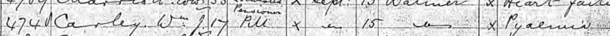

William James Carley cNov 1878 - 1896
[ Home ] | [ Calendar ] | [ Surnames Index ] | [ Errors ] | [ Family History ]The child of John Carley (a blacksmith) and Ann Boodle, William Carley, the second cousin twice-removed on the mother's side of Nigel Horne, was born in Brookland, Kent, England c. Nov 18781,2 and baptised there at St Augustine on 3 Nov 1878. On 3 Apr 1881, he was living at Church Farm Cottage, Harty, Kent, England1.
He died on 15 Sept 1896 in Walmer, Kent, England3,4 (pyaemia).
Parents
- John was born in 1851
- Ann
Citations
- 1881 England, Wales & Scotland Census - Findmypast (was age 2 and the son of the head of the household)
- England & Wales births 1837-2006 - Findmypast
- England & Wales deaths 1837-2007 - Findmypast
- UK, British Army and Navy Birth, Marriage and Death Records
Media
William Carley - Naval Death Record

England & Wales births 1837-2006 - BMD/B/1878/4/AZ/000092/258
England & Wales deaths 1837-2007 - BMD/D/1896/3/AZ/000055/105
1881 England, Wales & Scotland Census Transcription - GBC-1881-0004821181
Kent Baptisms - GBPRS/B/82082649/1
Kent Baptisms - PRS/KENT/BAP/1022777
England Births & Baptisms 1538-1975 - R_884052197
Family Tree

Map
Generated by ged2site. Last updated on Jul 3, 2024